キーボードだけでほぼすべての操作が完結する、
クロスプラットフォーム 2 画面ファイラ。
最新リリースを取得中…
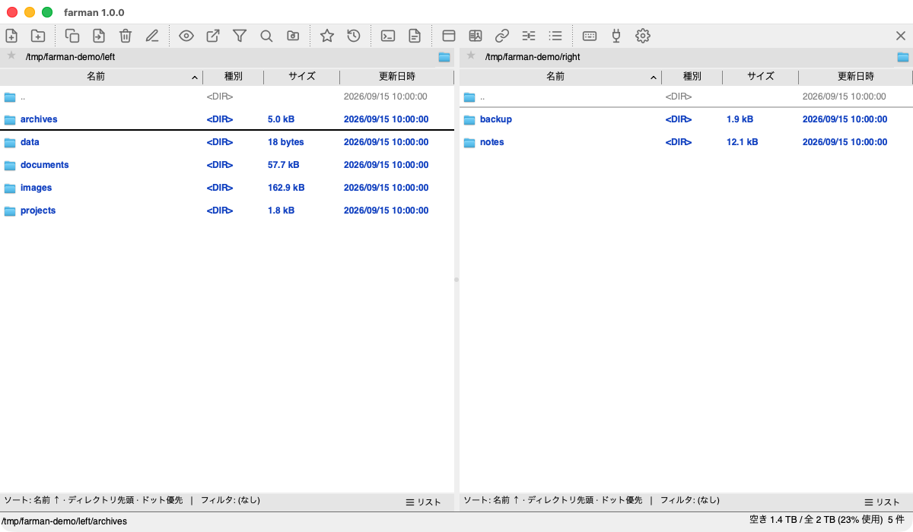
左右ペイン間のコピー / 移動 / 同期。任意でシングルペイン・プレビューレイアウトにも切替。
c/m/k/d/r/n 等の単一キーで主要操作。キーバインドは完全カスタマイズ可能。
コピー / 移動 / 削除 (ゴミ箱 or 完全) / リネーム / 一括リネーム (テンプレート + 連番 + 正規表現 + プレビュー)。
zip / tar / tar.gz / tar.bz2 / tar.xz の作成・展開。アーカイブ内ブラウジング (仮想 FS) と選択抽出。
テキスト / 画像 / バイナリ / Markdown / PDF / CSV・TSV。インライン or 別ウィンドウ、全文検索対応。
バックグラウンド再帰検索、ブックマーク、ディレクトリ履歴、アドレスバー + パス補完。
左右ペインの差分を行ごとに色分け。同期ブラウズと併用でき、コピー後も比較状態を維持。
テーマ / アドレスバー / カーソル / カテゴリ別ファイル色 / 行高。英語・日本語対応 (Auto は OS 追従)。
起動時に最新版をチェックし、ワンクリックでダウンロード + 検証 + インストール。
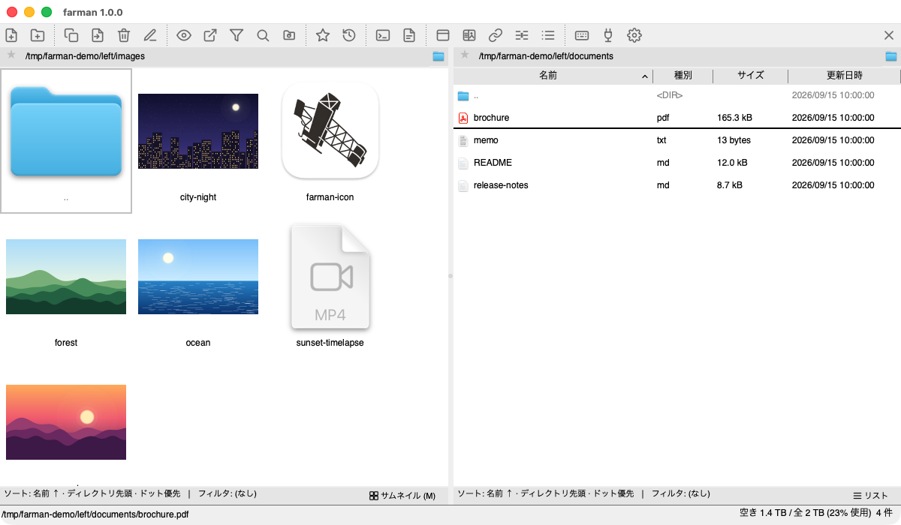
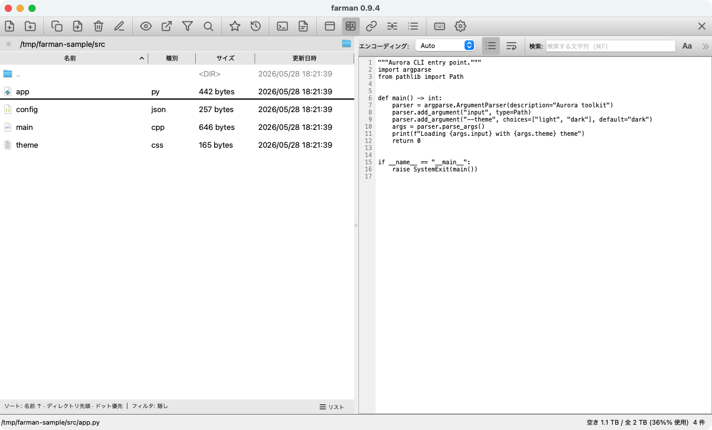
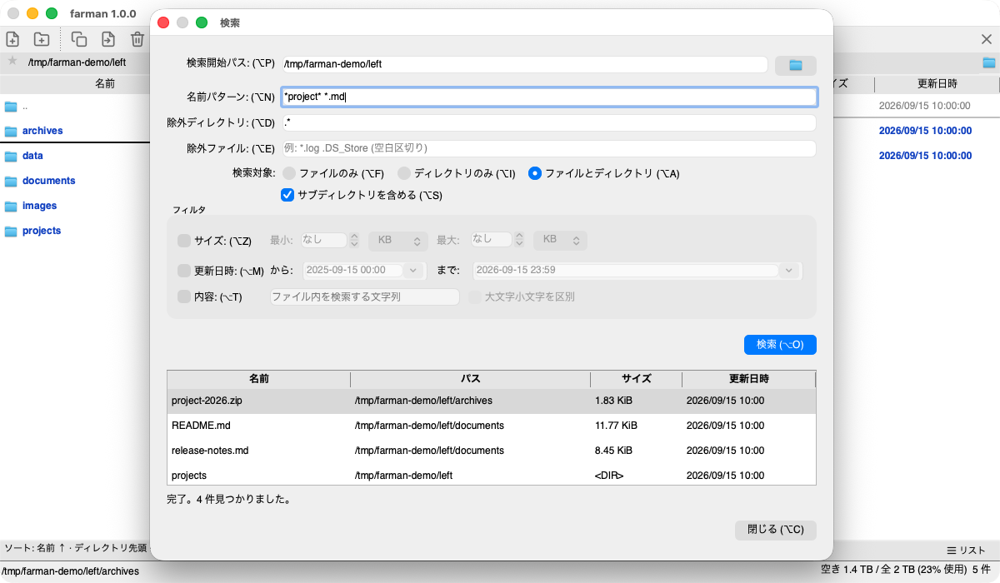
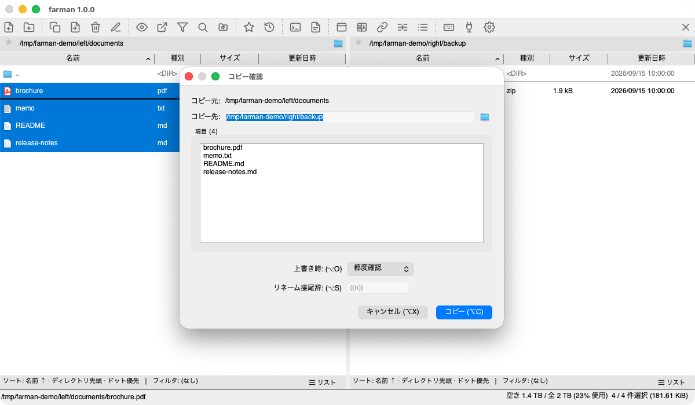
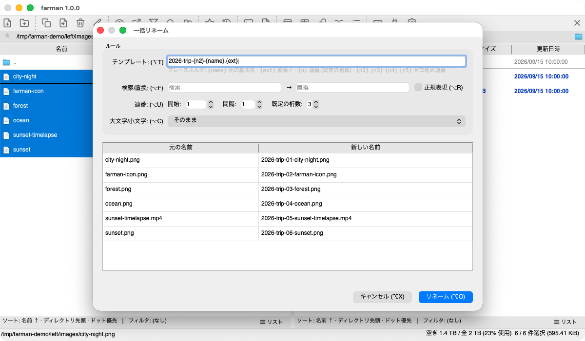
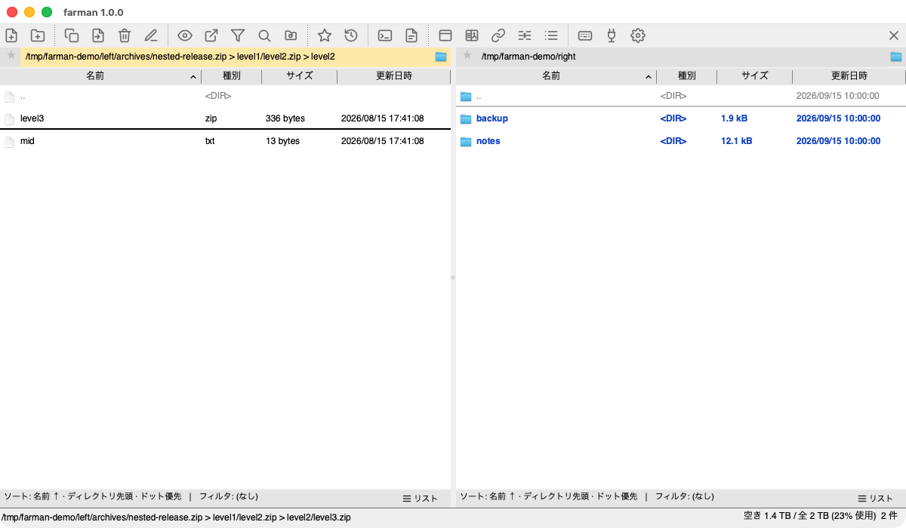
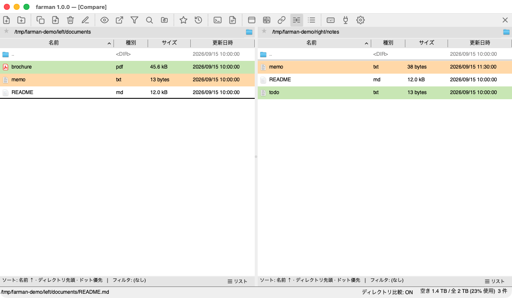
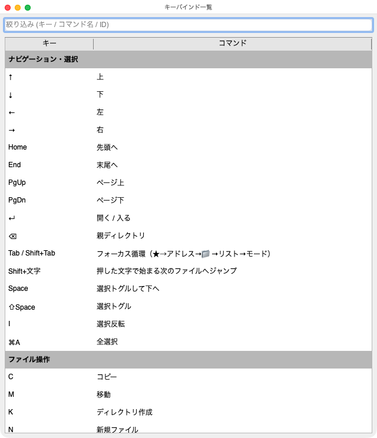

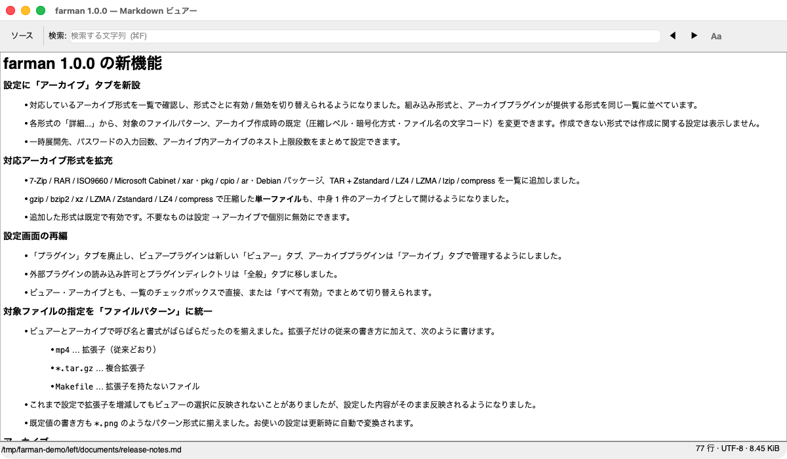
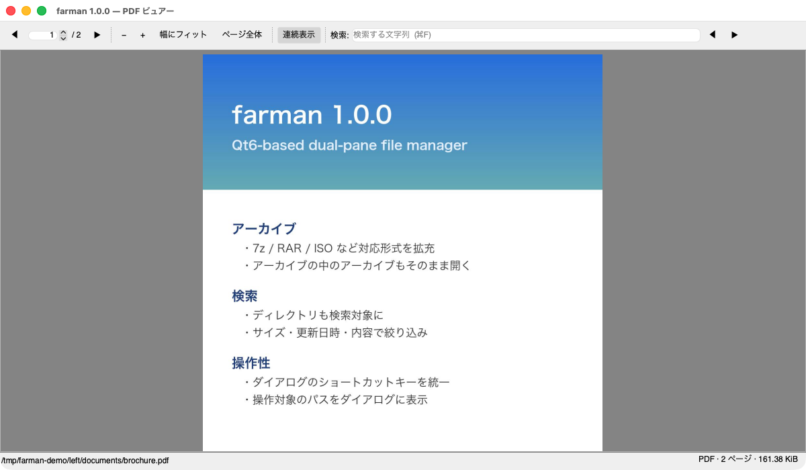
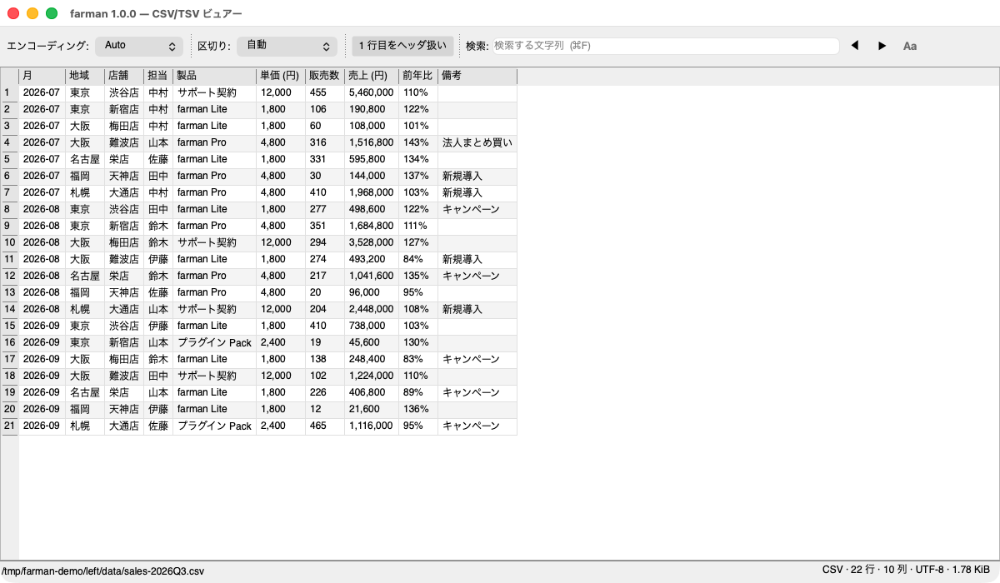
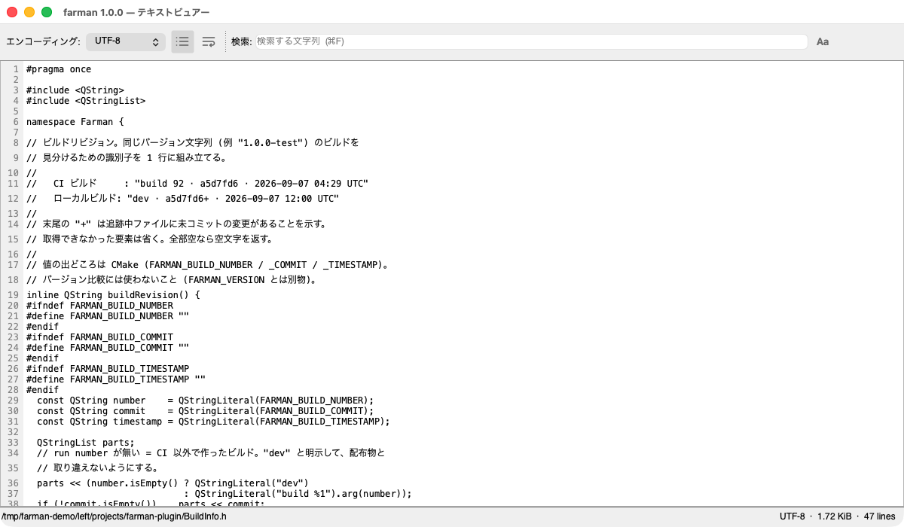
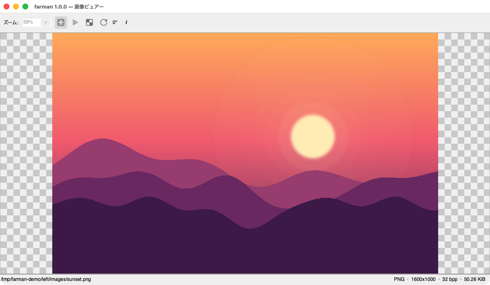
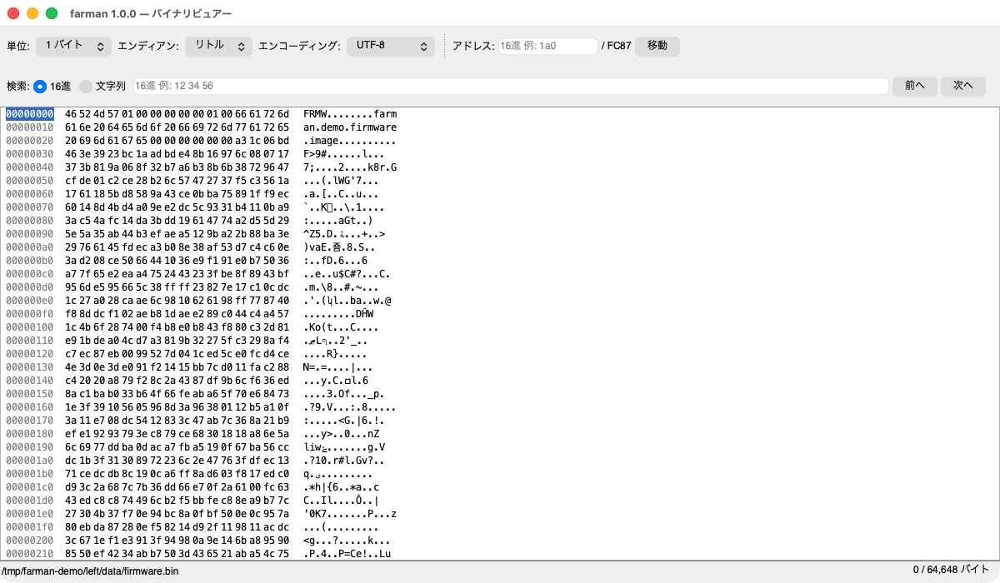
最新リリースを取得中…
すべてのリリースとリリースノートは
GitHub Releases
/ CHANGELOG
を参照してください。各アセットには .sha256 チェックサムが付属します。
farman は、複葉機の時代を切り拓いた航空のパイオニア アンリ・ファルマン (Henri Farman) にちなんで名付けました。読みは由来どおり「ファルマン」です（「ファーマン」ではありません）。
作者が暮らす埼玉県所沢市は、1911 年に開設された日本初の飛行場をもつ「日本の航空発祥の地」。その所沢での初飛行に使われたのが、ほかならぬ ファルマン機でした。アイコンの複葉機も、この黎明期の機体をモチーフにしています。
翼を操るように、キーボードひとつでファイルを操縦する——そんな軽快なファイラを目指して。